GAMES101 — Modern Computer Graphics Note3: Geometry
对应 Lecture 10–12 的几何部分。Lecture 10 开头的纹理应用和 Lecture 12 末尾的 shadow mapping 放在了上一篇。
1. 几何的表示
几何在图形学里无处不在：汽车、布料、水滴、树叶、城市、毛发、病毒结构……表示方法 分两大类：
- Implicit：algebraic surface、level sets、distance functions……
- Explicit：point cloud、polygon mesh、subdivision、NURBS……
每种表示适合不同的任务和几何类型。
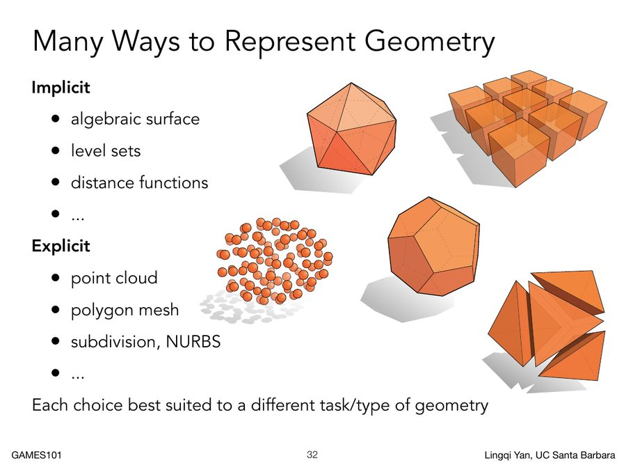
1.1 隐式表示
基于对点的分类：点满足某个关系式，比如球面是所有满足 \(x^2 + y^2 + z^2 = 1\) 的点。 一般地写成 \(f(x, y, z) = 0\)，\(f < 0\) 在内部，\(f > 0\) 在外部。
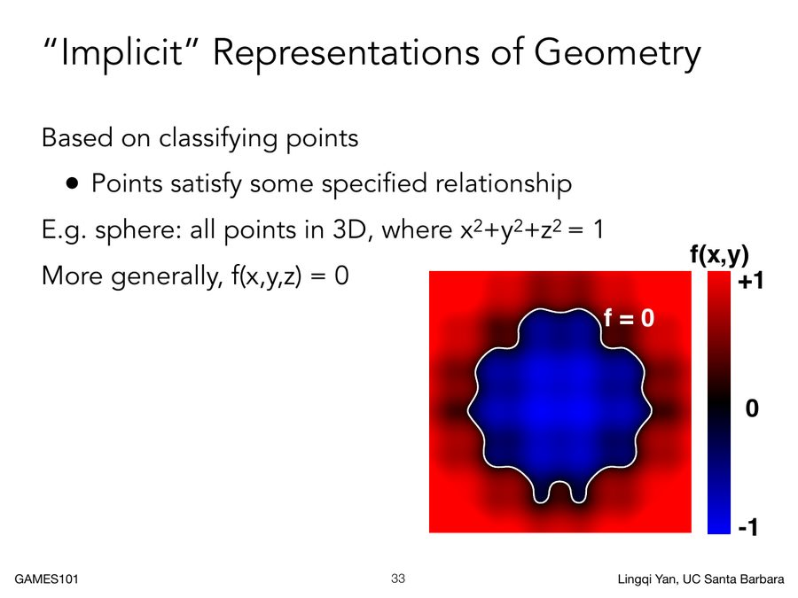
- 采样困难：给一个 \(f\)，要找出所有满足 \(f = 0\) 的点很难，比如 \(f(x, y, z) = (2 - \sqrt{x^2 + y^2})^2 + z^2 - 1\) 是个环面，但从式子看不出来
- 内外判断容易：\((3/4, 1/2, 1/4)\) 在单位球内吗？代进去 \(f = -1/8 < 0\)，在内部
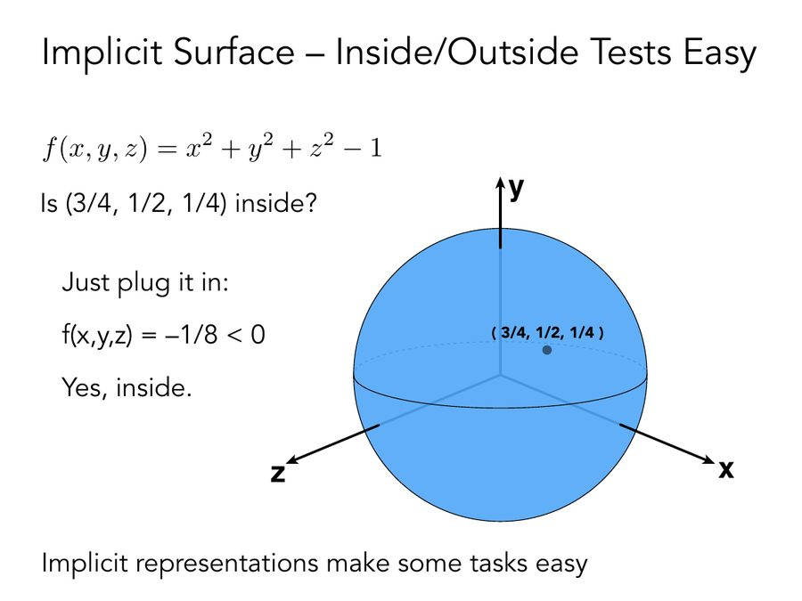
1.2 显式表示
所有点直接给出或通过参数映射给出：\(f: \mathbb{R}^2 \to \mathbb{R}^3\)， \((u, v) \mapsto (x, y, z)\)。
- 采样容易：\(f(u, v) = ((2 + \cos u)\cos v, (2 + \cos u)\sin v, \sin u)\)， 遍历 \((u, v)\) 就得到环面上的点
- 内外判断困难
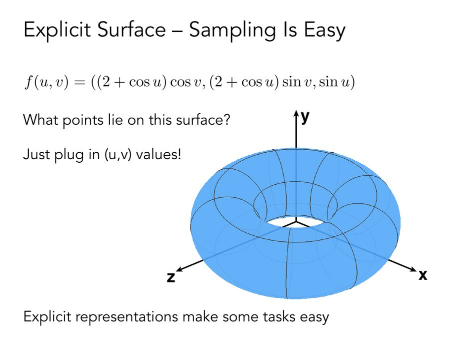
没有"最好"的表示，取决于任务。Pixar 的 David Baraff："I hate meshes. I cannot believe how hard this is. Geometry is hard."
1.3 更多隐式表示
- Algebraic surfaces：多项式的零点集。复杂形状难写
- Constructive solid geometry（CSG）：用布尔运算（并、交、差）组合简单的隐式几何
- Distance functions：不用布尔而是渐变地融合表面。对每个点给出到物体的最小 距离（可以带符号，即 SDF）。两个距离函数 \(d_1, d_2\) 可以任意 blend，比如线性插值， 得到的零等值面就是融合后的形状。Inigo Quilez 用纯距离函数做出整个场景
- Level set methods：闭式方程描述复杂形状很难，改为在网格上存函数值， 表面在插值后等于零的地方，控制更直接（像纹理一样）。医学数据（CT、MRI）和物理 仿真（液面到空气的距离）都用它
- Fractals：自相似、所有尺度都有细节，是描述自然现象的"语言"，但形状难控制
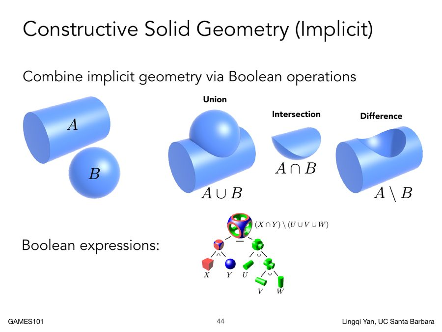
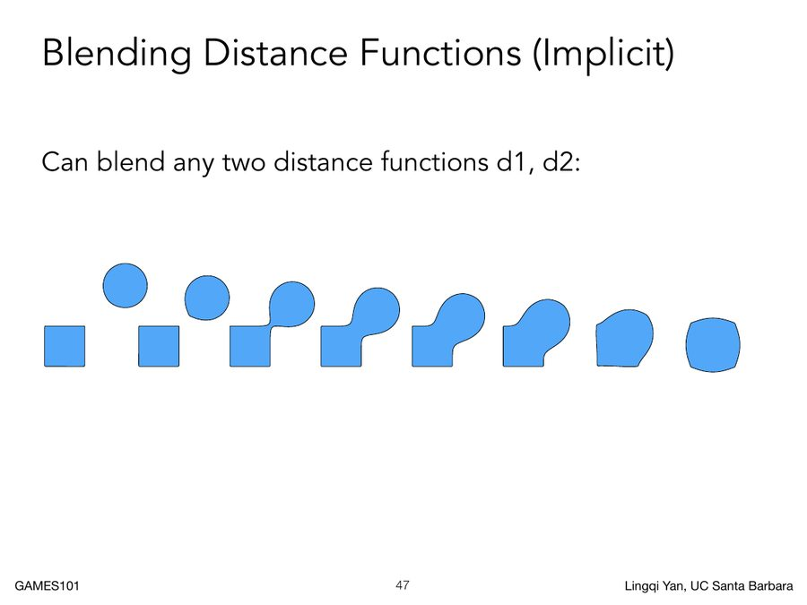
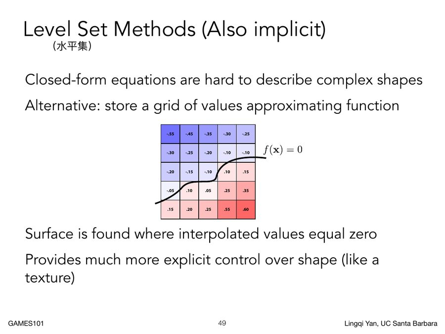
隐式表示的优缺点：
- Pros：描述紧凑（一个函数）；某些查询容易（内外、到表面的距离）；适合光线求交； 简单形状精确无采样误差；容易处理拓扑变化（流体）
- Cons：难以建模复杂形状
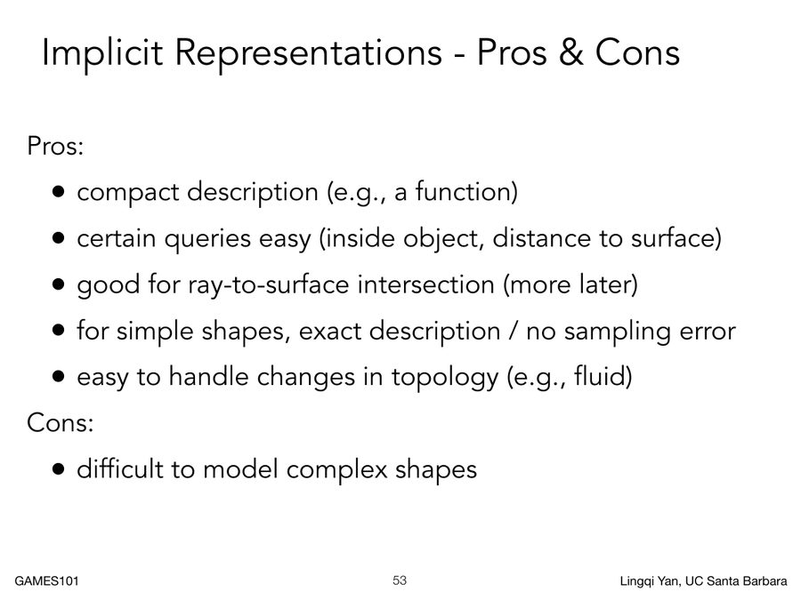
1.4 更多显式表示
- Point cloud：最简单，一列 \((x, y, z)\)。能表示任何几何，适合超大数据集 （远多于 1 点/像素），常转成 mesh。欠采样区域难以绘制
- Polygon mesh：存顶点和多边形（常是三角形或四边形）。更容易做处理、仿真、 自适应采样，数据结构更复杂。可能是图形学里最常用的表示
- Wavefront .obj：研究里常用的文本格式，列出顶点
v、法线vn、纹理坐标vt以及面f里的连接关系（索引组合 v/vt/vn） - Bézier surfaces、subdivision surfaces、NURBS 等
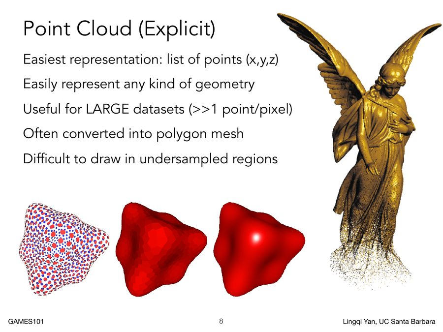
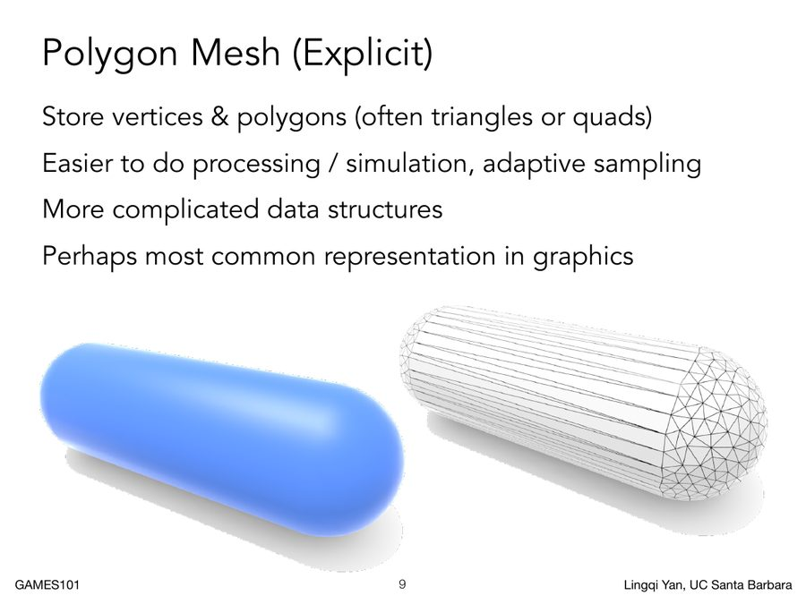
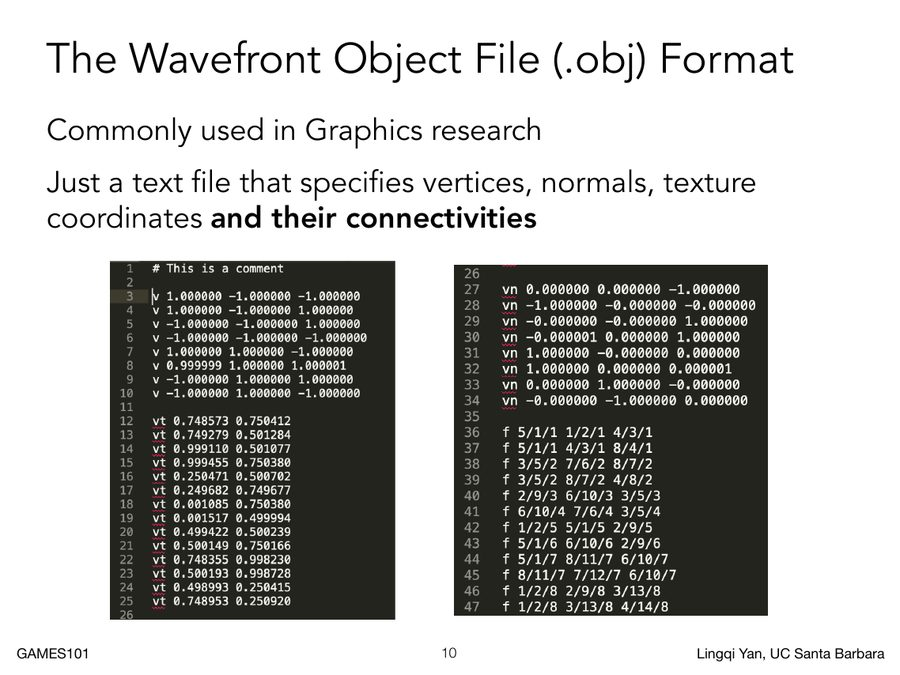
2. 曲线：Bézier curves
曲线的应用：相机路径、动画曲线（关键帧插值）、矢量字体（Baskerville 就是分段三次 Bézier 曲线）。
2.1 定义
Bézier 曲线由一组控制点定义。三次 Bézier 用 4 个点 \(p_0, p_1, p_2, p_3\)：曲线 从 \(p_0\) 出发、在 \(p_3\) 结束，起点切线 \(t_0 = 3(p_1 - p_0)\)，终点切线 \(t_1 = 3(p_3 - p_2)\)。
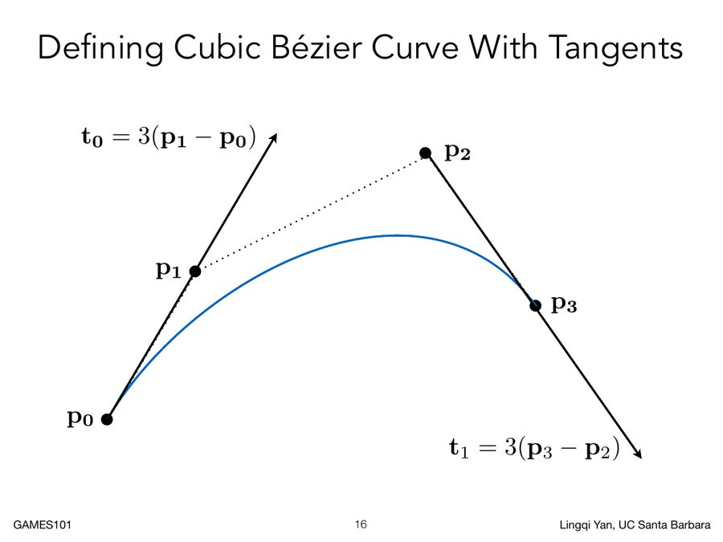
2.2 De Casteljau 算法
怎么求曲线上的点？以二次（3 个点 \(b_0, b_1, b_2\)）为例，给定 \(t \in [0, 1]\)：
- 在 \(b_0 b_1\) 上按 \(t\) 线性插值得到 \(b_0^1\)，在 \(b_1 b_2\) 上得到 \(b_1^1\)
- 在 \(b_0^1 b_1^1\) 上再按 \(t\) 插值得到 \(b_0^2\)，这就是曲线上 \(t\) 对应的点
- 对 \([0, 1]\) 里每个 \(t\) 重复，连起来就是曲线
三次的情况一样，4 个点递归做三层线性插值。
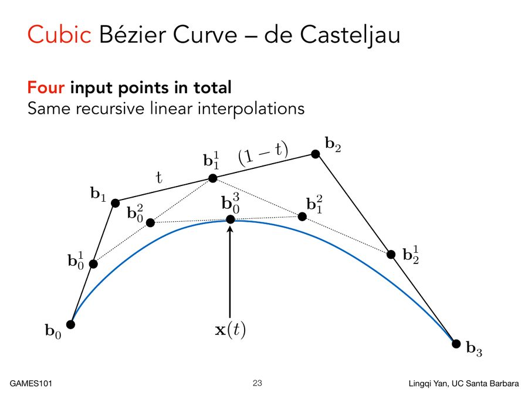
2.3 代数形式
De Casteljau 给出一个系数金字塔：每个向右的箭头乘 \(t\)，向左的乘 \((1 - t)\)。
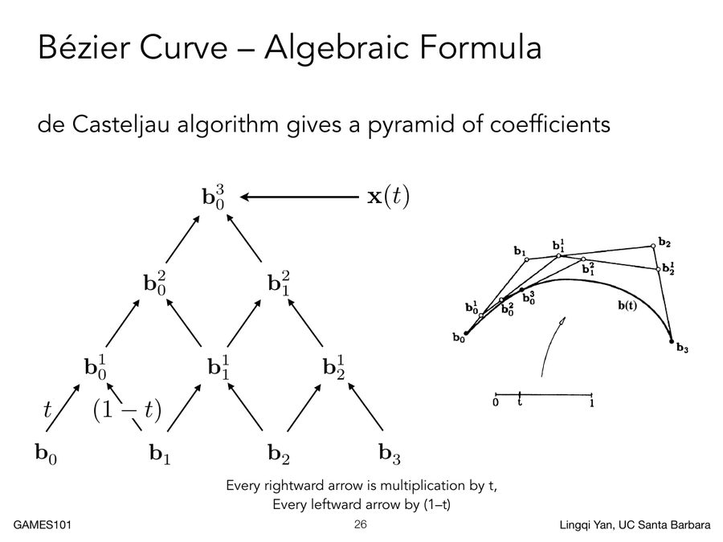
二次的例子：
一般地，\(n\) 阶 Bézier 曲线的 Bernstein 形式：
\(\mathbf{b}_j\) 是控制点（\(\mathbb{R}^N\) 里的向量），\(B_i^n\) 是 Bernstein 多项式 （标量，\(n\) 次），本质上是二项分布。三次的例子：
控制点可以在 3D，得到 3D 曲线。
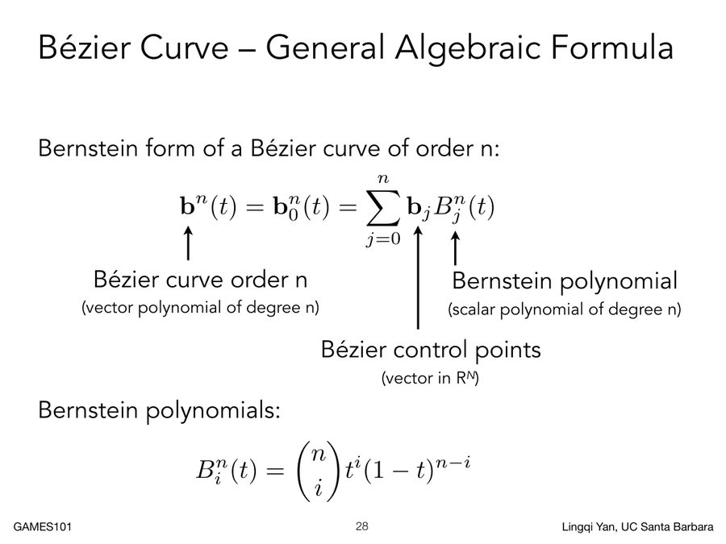
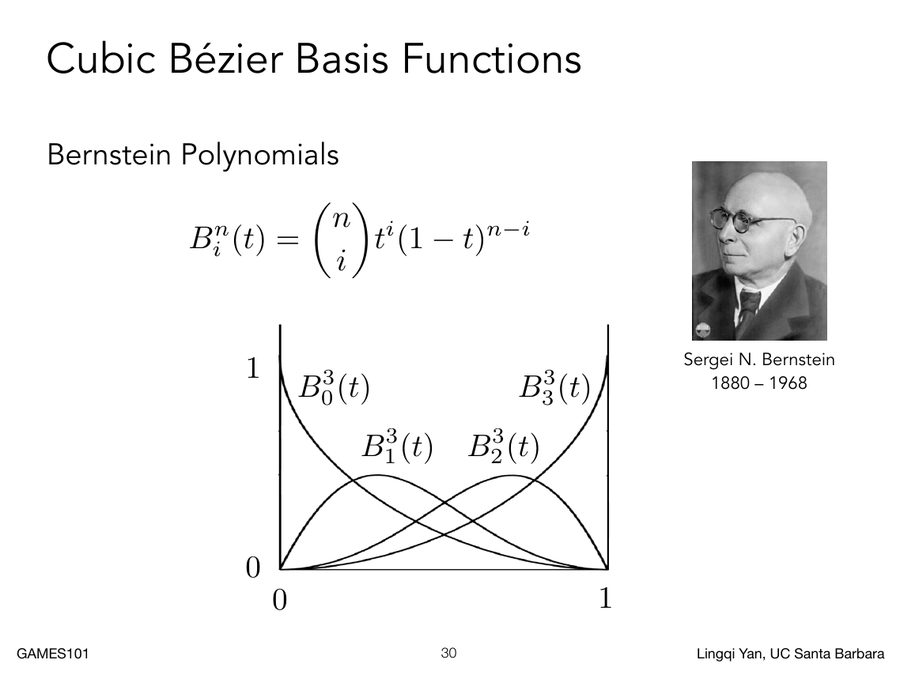
2.4 性质
- 插值端点：三次时 \(\mathbf{b}(0) = \mathbf{b}_0\)，\(\mathbf{b}(1) = \mathbf{b}_3\)
- 端点切线：\(\mathbf{b}'(0) = 3(\mathbf{b}_1 - \mathbf{b}_0)\)，\(\mathbf{b}'(1) = 3(\mathbf{b}_3 - \mathbf{b}_2)\)
- 仿射不变性：对曲线做仿射变换等于对控制点做变换再生成曲线（投影变换不行）
- 凸包性质：曲线在控制点的凸包内
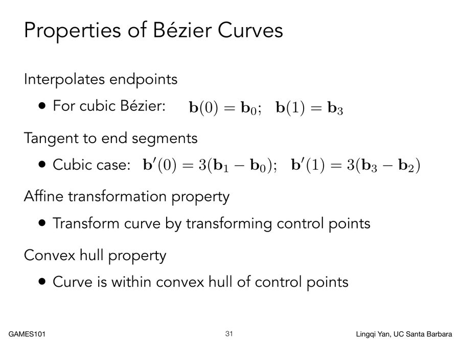
2.5 分段 Bézier 曲线
高阶 Bézier 曲线很难控制，不常用。取而代之是把很多低阶曲线串起来， 分段三次 Bézier 是最常见的技术（字体、路径、Illustrator、Keynote……）。 每 4 个控制点一段，所以工具里拖动的是"锚点 + 两个手柄"。
连续性：两段曲线 \(\mathbf{a}\)（\([k, k + 1]\)）和 \(\mathbf{b}\)（\([k + 1, k + 2]\)）
- \(C^0\) 连续：\(\mathbf{a}_n = \mathbf{b}_0\)，即首尾相接
- \(C^1\) 连续：\(\mathbf{a}_n = \mathbf{b}_0 = \frac{1}{2}(\mathbf{a}_{n - 1} + \mathbf{b}_1)\)， 即接点两侧的控制点共线且等距，切线方向和大小都连续
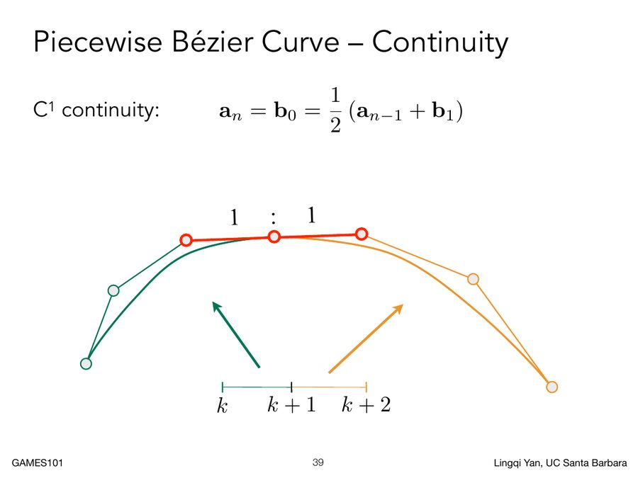
2.6 其他样条
Spline：通过给定点、且有若干阶连续导数的连续曲线，简言之"受控的曲线"。 B-splines（basis splines）需要比 Bézier 更多的信息，满足 Bézier 的所有重要性质 （是它的超集），并且有局部性：动一个控制点只影响局部。本课不讲 B-spline、 NURBS 以及曲线上的操作（升降阶等），可参考胡事民老师的课程。
3. 曲面：Bézier surfaces
把 Bézier 曲线扩展到曲面。Bicubic Bézier surface patch 由 \(4 \times 4\) 个控制点 定义，输出是由 \((u, v) \in [0, 1]^2\) 参数化的 2D 曲面。Utah teapot 就是由多个 patch 拼成的。
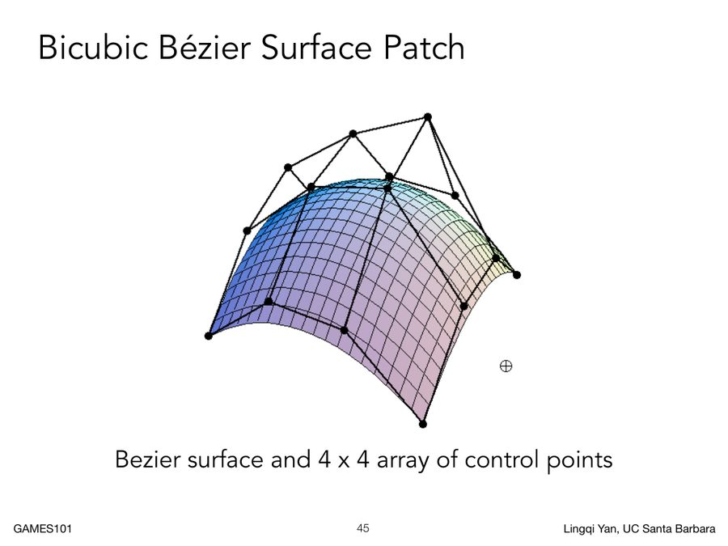
求值：可分离的 1D de Casteljau。 目标是求 \((u, v)\) 对应的曲面点：
- 对 4 条 \(u\) 方向的 Bézier 曲线各用 de Casteljau 求出 \(u\) 处的点，得到 4 个 "移动的" Bézier 曲线的控制点
- 对这条移动曲线用 1D de Casteljau 求 \(v\) 处的点
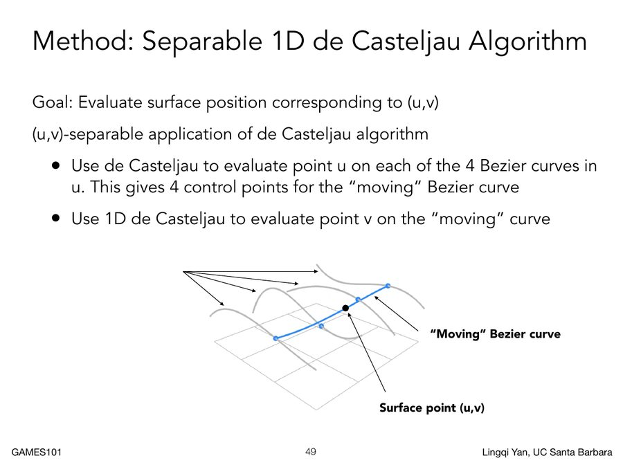
4. Mesh 处理
三种 geometry processing 操作：
- Mesh subdivision（upsampling）：增加分辨率
- Mesh simplification（downsampling）：减少分辨率，尽量保持形状和外观
- Mesh regularization（三角形数不变）：改变采样分布以提高质量，避免又尖又长的 三角形
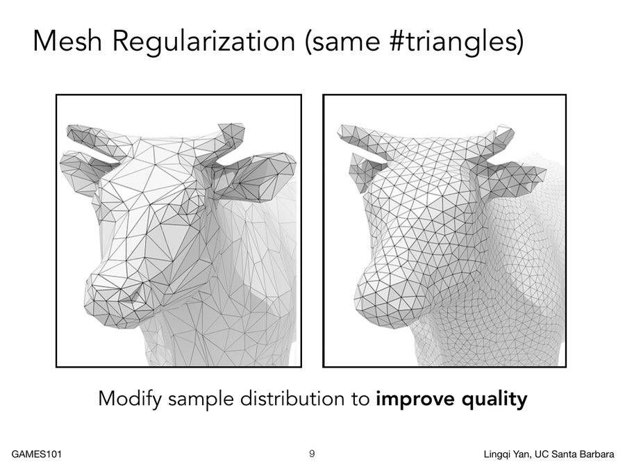
4.1 Loop subdivision
三角形网格的常用细分规则（Loop 是人名，不是循环）。两步：先增加三角形（顶点）， 再调整位置。
- 每个三角形沿三边中点拆成四个
- 按权重给顶点赋新位置，新顶点和老顶点更新方式不同
新顶点（边中点）：设该边两个端点是 \(A, B\)，两侧三角形的另外两个顶点是 \(C, D\)，
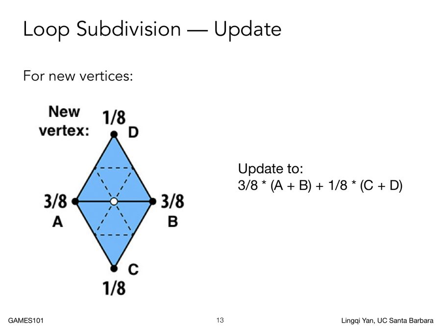
老顶点：设顶点度数为 \(n\)，\(u = 3/16\)（\(n = 3\) 时）或 \(u = 3 / (8n)\)（否则），
意思是：老顶点相信自己一部分，也相信邻居一部分；度数越高，邻居的话语权越大。
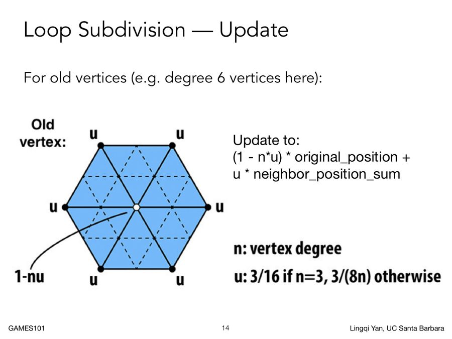
4.2 Catmull-Clark subdivision
Loop 只适用于三角形网格。Catmull-Clark 适用于一般网格（含四边形和非四边形面）。 先定义：非四边形面（non-quad face）和奇异点（extraordinary vertex，度数 ≠ 4）。
每一步细分：
- 在每个面里加一个点
- 在每条边上加中点
- 把所有新点连起来
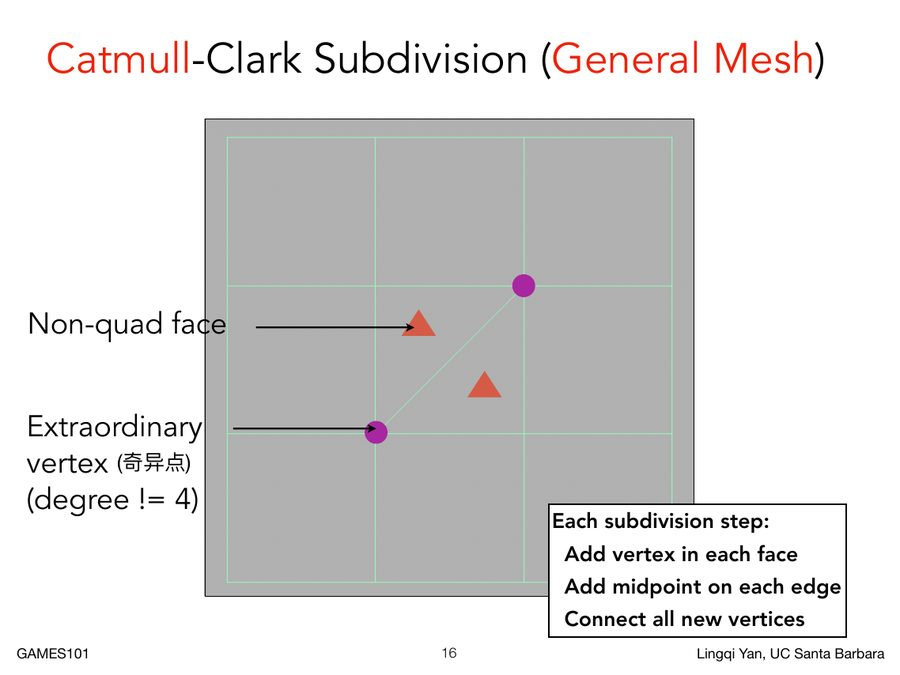
一次细分之后：每个非四边形面都变成一个奇异点（度数等于原面的边数），奇异点的 数量增加了原来非四边形面的数量；之后所有面都是四边形，奇异点的数量不再增加。
更新规则（四边形网格）：
- Face point：\(f = \frac{v_1 + v_2 + v_3 + v_4}{4}\)
- Edge point：\(e = \frac{v_1 + v_2 + f_1 + f_2}{4}\)（边的两个端点和两侧的 face point）
- Vertex point：\(v = \frac{f_1 + f_2 + f_3 + f_4 + 2(m_1 + m_2 + m_3 + m_4) + 4p}{16}\) （\(m\) 是边中点，\(p\) 是老顶点位置）
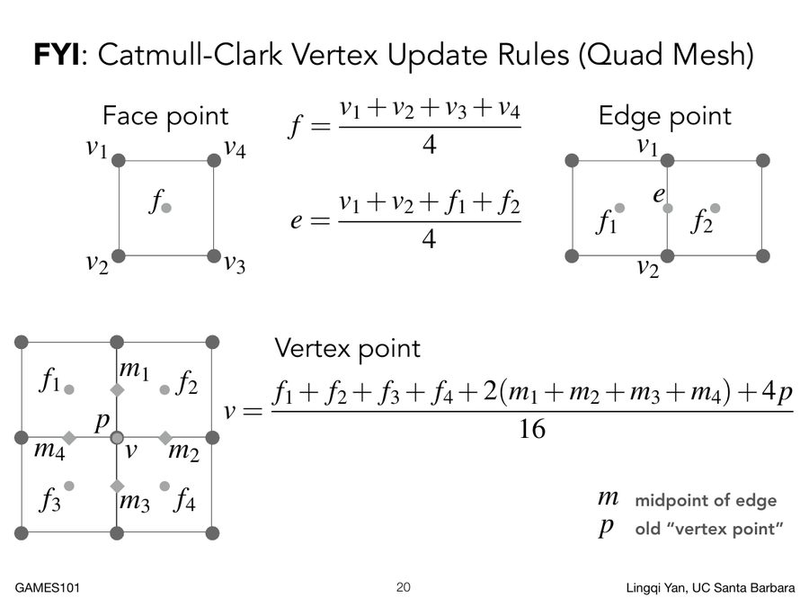
细分多次后收敛到光滑曲面，需要保留的锐边（creases）可以特殊处理。Pixar 的 "Geri's Game" 是细分曲面的经典应用。
4.3 Mesh simplification
目标：减少网格元素数量，同时保持整体形状（比如 30000 个三角形减到 300 个）。 基本操作是 edge collapsing：把一条边的两个端点合并成一个。
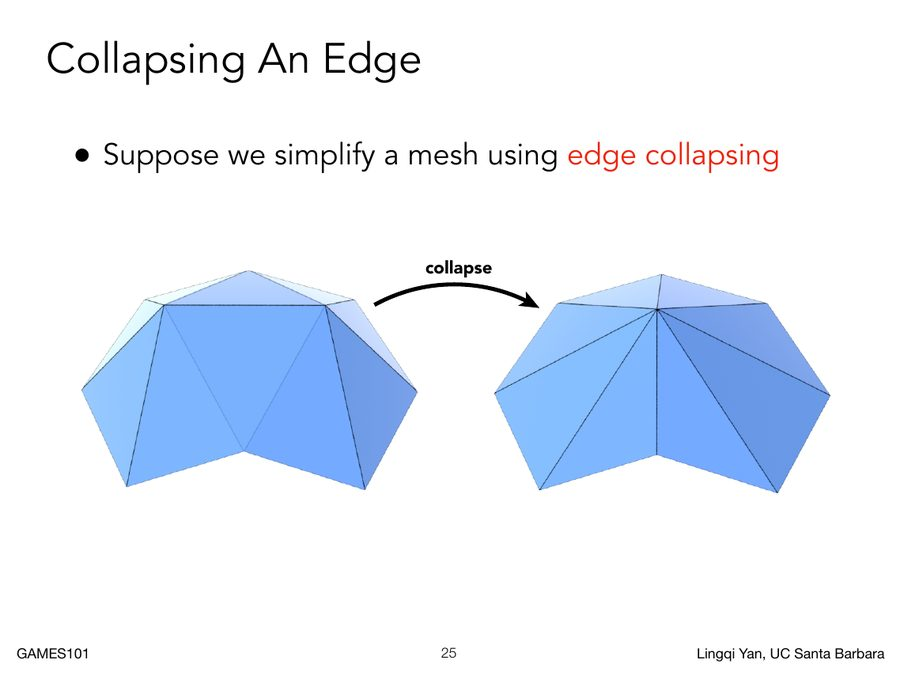
合并到哪里？简单地取顶点平均不好。Quadric error metrics：新顶点应该最小化 到之前相关三角形所在平面的距离平方和（\(L_2\) 距离）。
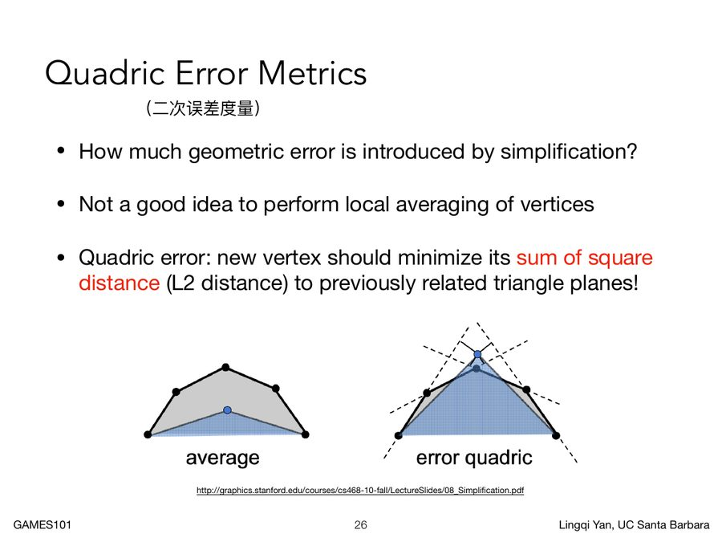
算法（Garland & Heckbert 1997）：
- 给每条边打分：坍缩它并把新点放在 quadric error 最小的位置，这个最小误差就是分数
- 迭代地坍缩分数最小的边
- 坍缩后受影响的边要重新打分，所以用优先队列（堆）维护
这是贪心算法，但效果很好。
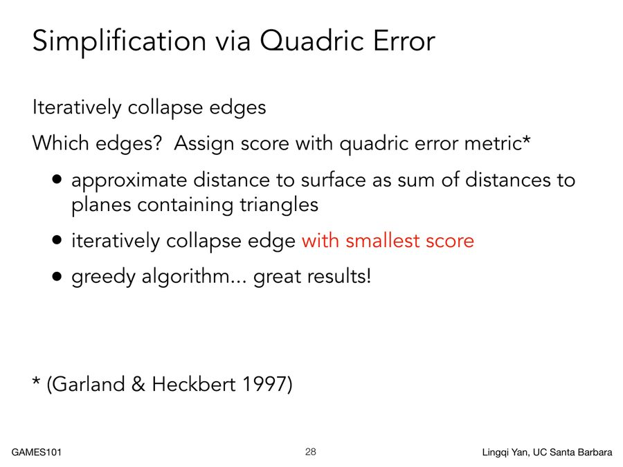
5. 课程路线图
到这里覆盖了 rasterization 和 geometry 两大块，接下来是 ray tracing 和 animation / simulation。
Comments